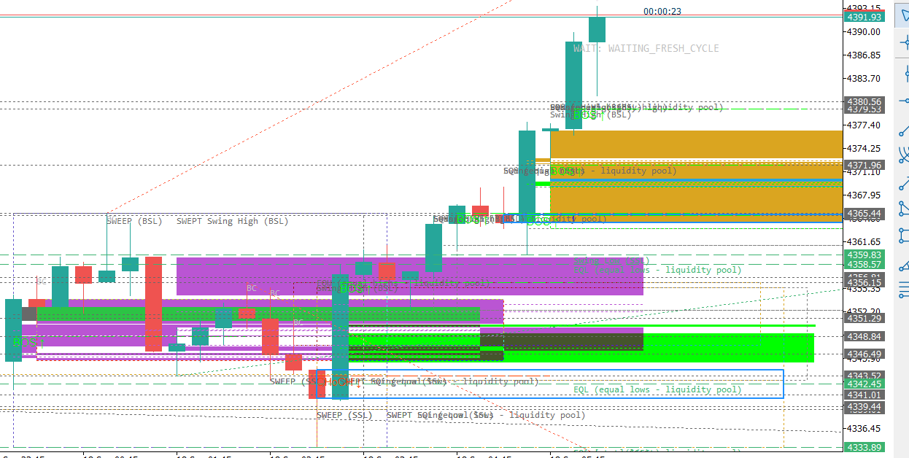

یک اندیکاتور متاتریدر ۵ که هم رسم میکند و هم یاد میدهد
نُه مکتب معاملهگری در یک ابزار: ICT · SMC · Market Maker Model · وایکاف · عرضه و تقاضا · تئوری بازار حراج · پروفایل حجم · RTM · پرایساکشن البروکس. روی هر خط، ناحیه یا رویداد که کلیک کنی، پنل توضیح فارسی باز میشود: این چیست، چرا شکل گرفت، چه چیزی تأییدش میکند، چه چیزی باطلش میکند — و عددش را چطور خودت روی چارت بازبینی کنی.
دمو: روی نقطههای روی چارت کلیک کن
همین کاری که در متاتریدر میکنی — کلیک روی یک ناحیه — فقط بازسازیشده در مرورگر. پنل در ستون کنار باز میشود و روی چارت را نمیپوشاند.

چارت واقعی XAUUSD تایمفریم M15 با همهٔ لایههای زندهٔ اندیکاتور. متن پنل، همان متنی است که اندیکاتور نشان میدهد؛ برای مرورگر بازسازی شده است.
چه چیزی میسازد
هر خانواده کلید روشن/خاموش مستقل دارد و کشف همیشه فعال است، حتی وقتی رسم خاموش باشد.
ساختار و جهت
BOS · CHoCH / MSS با پیوتهای بدون ریپینت · موتور سویینگ با سقف و کف محافظتشده · مالکیت Bias روی H4 (تایمفریم پایین میتواند ستاپ را تأیید یا رد کند، ولی هرگز Bias را برنمیگرداند).
نقدینگی
PDH/PDL · PWH/PWL · سقف و کف برابر با قاعدهٔ تفکیک · BSL/SSL · نقدینگی سشن، رنج و خط روند · سطوح IPDA (سقف و کف ۲۰/۴۰/۶۰ روزه) · جارو / شکار استاپ / Judas با شرط فتیله + بستهٔ برگشتی.
نواحی و ناکارآمدی
FVG در پنج نوع (Standard، Inverted، Implied، Micro، Volume Imbalance) با خط Consequent Encroachment · اردربلاک (صعودی/نزولی، Extreme، Internal/External، Core/Standalone) · Breaker با Sweep اجباری و ریتست در کندل جدا · Mitigation Block · Rejection Block · عرضه و تقاضا (RBR/DBR/RBD/DBD) با امتیاز قدرت ناحیه.
زمانبندی و کانتکست
سشنهای به وقت نیویورک · رنج آسیا · کیلزون لندن و نیویورک · پنجرههای Silver Bullet با وضعیت همسویی HTF · Quarterly Theory با True Day/Week Open · AMD هم بهصورت نگاشت سشنی و هم مرحلهٔ اندازهگیریشدهٔ قیمت.
کانتکست اندازهگیری
Premium/Discount روی فیبوی ۵۰٪ · ناحیهٔ OTE (۰٫۶۲ تا ۰٫۷۹ با پنجرهٔ طلایی ۰٫۷۰۵) · رجیستری PD-Array / POI با امتیاز کیفیت و امتیاز Nested Mitigation · ردیابی لگ معاملهگری («طلا تا کجا رفت»).
موتور مکتبها
وایکاف (SC/BC/AR/ST و Spring/Upthrust/SOS/SOW/LPS با فازهای A تا E) · Market Profile (POC، Value Area، HVN/LVN، IB، TPO، Naked POC، نوع روز و نوع باز شدن) · البروکس (کندل روند، سیگنال، ورود، H1–H4 / L1–L4، Always-In، ۲۰ EMA، رنج با مغناطیس ۵۰٪، Measured Move، شیب کانال) · RTM · امتیاز Smart Money Reversal.
نوار ریسک برگشت
یک نوار تکخطی روی چارت: نزدیکترین سطح، نوع و وضعیتش، فاصله بر حسب ATR، پیشرفت لگ، و امتیاز مستند ریسک برگشت — تا بدون باز کردن فایل CSV بدانی کجا ایستادهای.
حالت آموزش
کلیک روی هر آبجکت: پنل مفهوم را توضیح میدهد، قاعدهٔ دقیقی که آن را ساخته، شرط ابطالش، و روش بازمحاسبهٔ دستی عدد روی چارت خودت.
چرا با دیگر اندیکاتورها فرق دارد
تفاوتها ادعا نیستند؛ هر کدام در مخزن قابل بازبینیاند.
| اندیکاتورهای معمول SMC | این ابزار |
|---|---|
| یک خط میکشد و دلیلی نمیگوید | هر آبجکت پنل توضیح دارد — قاعدهای که آن را ساخت و شرط ابطالش |
| با هر تیک دوباره حساب میکند و ریپینت دارد | تحلیل فقط روی کندل بسته؛ پیوت پیش از انتشار تأیید میشود |
| یک مدل سراسری روی همهٔ تایمفریمها | هر تایمفریم مستقل — رجیستری و رسم خودش را دارد |
| شلوغی که تا ابد جمع میشود | سقف رجیستری، انقضای FIFO، و حذف خودکار تاریخچهٔ باطلشده |
| ادعاهای مبهم | هر تعریف عملیاتی مستند است و ۲۰ ابزار اعتبارسنجی قاعده را قفل میکنند |
| هیچ شاهدی برای «عدد درست است» | آزمون رفتاری روی کندل ساختگی که توابع واقعی تشخیص را صدا میزند و خروجی عددی را با بازمحاسبهٔ مستقل مقایسه میکند |
نصب در چهار قدم
- دانلود. از صفحهٔ Release فایل
ICT_Assistant_Canonical_v0_1.ex5را بگیر و در پوشهٔMQL5\Indicators\ترمینالت بگذار. (خواستی خودت کامپایل کنی، بستهٔ سورس هم همانجاست.) - رفرش ترمینال. در پنجرهٔ Navigator راستکلیک کن و Refresh بزن.
- کشیدن روی چارت. اندیکاتور را روی چارت XAUUSD بینداز (پیشفرضها برای طلا تنظیم شدهاند؛ نمادهای دیگر هم کار میکنند).
- باز کردن پنل توضیح. روی هر خط یا ناحیه کلیک کن (در پروفایل پیشفرض) یا با نگهداشتن Ctrl موس را روی آن ببر. با Esc یا کلیک بعدی بسته میشود.
InpShowDashboard=true.
پنج قاعدهای که این پروژه به آن متعهد است
۱. فقط کندل بسته
هیچ سیگنالی روی کندل در حال شکلگیری نهایی نمیشود؛ رویدادهای پیوتی فقط بعد از تأیید سمت راست منتشر میشوند.
۲. بدون جفتشدگی پنهان تایمفریم
هر تایمفریم آبجکت خودش را دارد. کانتکست تایمفریم بالاتر بهعنوان داده خوانده میشود، نه بهعنوان رسم دوباره.
۳. دامنهٔ صادقانه
دادهٔ واقعی اردرفلو / فوتپرینت / دلتا از فید نیتیو متاتریدر در فارکس در دسترس نیست. خانوادهٔ پروفایل حجم صریحاً «تقریب تیکولوم» برچسب خورده است.
۴. تعریف عملیاتی مستند
هر جا یک مکتب تعریفهای رقیب دارد (مثل Smart Money Reversal)، قاعدهٔ دقیق استفادهشده نوشته و با اعتبارسنج قفل میشود.
۵. انقضا بهجای شلوغی
آبجکتهای باطلشده حذف میشوند، روی هم تلنبار نمیشوند. سقفهای نمایش FIFO است تا تاریخچه وسط سشن بیصدا ناپدید نشود.
محدودیتهای صادقانه
| فاصلهٔ استاپ | فعلاً یک بافر ثابت است، ATR‑آگاه نیست و SYMBOL_TRADE_STOPS_LEVEL را در نظر نمیگیرد. |
| معیارهای حجمی | خانوادهٔ پروفایل حجم و «تلاش در برابر نتیجه» روی تیکولوم کار میکنند، نه حجم واقعی معاملهشده. |
| امتیاز ریسک برگشت | مجموع وزندار شواهد است، نه احتمال کالیبرهشده. نرخ برخورد واقعی هر سطح به جمعآوری داده در زمان اجرا نیاز دارد (ابزارش هست، دادهٔ تاریخی نه). |
| ربات نیست | سفارش نمیگذارد و مدیریت نمیکند. توصیهٔ مالی هم نیست. |
پرسشهای پرتکرار
چارت شلوغ شد؛ چه کنم؟
هر خانواده کلید رسم مستقل دارد. پیشفرضها عمداً «ضروریها روشن، تزئینات خاموش» هستند. اگر باز هم شلوغ بود، InpMaxDrawnZones و InpMaxDrawnLevels را کم کن یا لایهٔ نقدینگی/برچسبهای وایکاف را خاموش کن. کشف با خاموشکردن رسم متوقف نمیشود.
آیا هر تایمفریم برای خودش کار میکند؟
بله. هر چارت رجیستری، رسم و چرخهٔ عمر خودش را دارد. تایمفریم بالاتر فقط بهعنوان دادهٔ کانتکست خوانده میشود و چیزی روی چارت جاری بازنویسی نمیکند.
روی چند تایمفریم همزمان میتوانم بگذارم؟
بله. چون بار سنگین تحلیل یکبار در هر کندل بسته اجرا میشود (نه در هر تیک) و رجیستریها سقف دارند، روی M1 هم قابل استفاده است.
پنل توضیح چرا فارسی را درست نشان میدهد؟
متاتریدر هیچ پشتیبانی بومی برای راستبهچپ ندارد و چپچین میکند. این پروژه یک لایهٔ رندر فارسی اختصاصی دارد که ترتیب حروف و اتصال آنها را خودش میچیند، متن را در چند خط میشکند و جهت را حفظ میکند.
چطور بفهمم محاسبات درست است؟
سه راه داری: (۱) پنل توضیح روش بازبینی دستی عدد را میگوید؛ (۲) ۲۰ ابزار اعتبارسنجی قاعدهها را قفل میکنند؛ (۳) یک آزمون رفتاری با ۲۵ سناریو روی کندل ساختگی، خودِ توابع تشخیص را اجرا میکند و اعداد را با بازمحاسبهٔ مستقل مقایسه میکند. هر سه در مخزن قابل اجرا هستند.
مشارکت در پروژه چطور است؟
Issue و Pull Request باز است. فقط تغییرات باید با قاعدهٔ «کندل بسته / بدون ریپینت» سازگار باشند و ابزارهای اعتبارسنجی مربوطه را سبز نگه دارند.